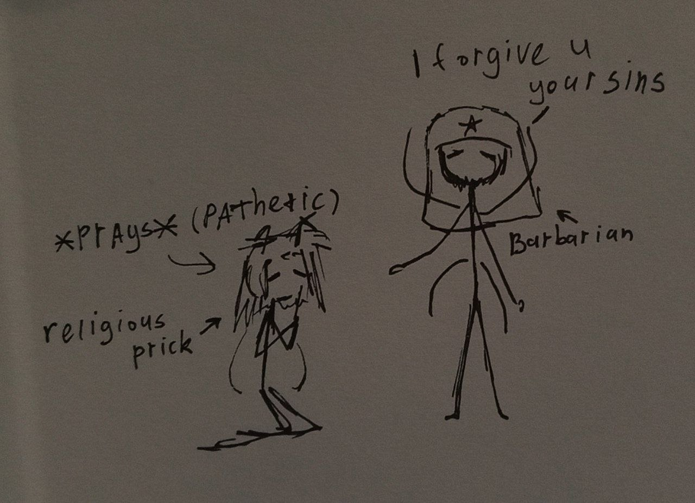

Role: Private operative, it seems...
— Masculine appearance; voice stable but... pretty quiet.
— Movements lack urgency even under fire
— Maintains posture of ritual readiness rather than combat readiness
— No visible hesitation when facing lethal threat. Although heaven knows there's something wrong with him.
Demonstrates absolute faith in some divine plan, someone’s will, against which a person has no right to go.
He does not frame his actions as sacrifice or strategy. From all intercepted dialogue, subject is convinced that survival (his or others’) is a part of god's masterplan.
I spoke with him once. He describes death as a “necessary passage". Guess it's quite a pragmatic look at such thing. Well... If it helps him sleep at night, then... 'aight...
— Some kind of religious fixation
— Dissociation from immediate physical danger
— Calm acceptance of death (not quite like mine, born of belief rather than disappointment)
— No detectable irony in self-perception
Notably, subject shows genuine emotional engagement when discussing death with others - particularly those who display fear or uncertainty. Freakish, no?
— There is something unsettling about him. U ever had a feeling that there's something... Off? Sometimes when I watch mission footage, I notice him out of the corner of my eye. I swear to God, something's wrong with him. I always wonder what it is, but I can't figure it out. He once asked me what I thought happened in the very last seconds. Not after, but during. I didn't answer. He looked disappointed. In a way, it's probably even brave. Although strange. He came to the front voluntarily; it's unlikely he dreamed he had to do this. So, is his possible death God's will or a step against it?.. Or is the front a choice, and death a destiny? His philosophy isn't entirely clear to me. Besides, my conversation with him wasn't... particularly pleasant for me. He talks about death as if it's structured. As if there's some kind of etiquette to dying in the dirt. As if death will be polite to him.
